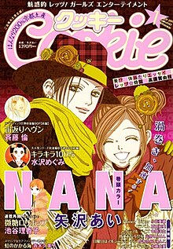

Jugá a las cartas contra Shin por el puesto de mejor apostadorx!
Presentamos una serie de juegos inspirados en la serie de anime NANA: un juego de cartas para demostrar tus dotes estratégicos, la generala para probar tu suerte y una serie de preguntas para demostrar cuánto sabes de la serie. Esperamos que los disfrutes!
Jugá a las cartas contra Shin por el puesto de mejor apostadorx!

Probá tu suerte contra los Trapnest en la Generala!

Demostrá cuánto sabes de NANA con las preguntas!
 NANA (ナナ Nana) es una serie de manga shoujo escrita e ilustrada por Ai Yazawa. Fue serializada en la revista Cookie de la editorial Shueisha desde el 15 de mayo de 2000 hasta junio de 2009, cuando fue puesta en hiatus debido a una enfermedad de la autora. Finalmente, Yazawa se recuperó, pero el manga siguió en pausa indefinida.
La serie fue dirigida por Morio Asaka, escrita por Ai Yazawa y producida por Madhouse, el diseño de los personajes fue realizado por Kunihiko Hamada y la música por Tomoki Hasegawa.
 La historia sigue a Nana Osaki y Nana Komatsu, dos chicas con el mismo nombre que se encuentran por casualidad en un tren camino a Tokyo.
Debido a una gran nevada el tren tarda más de lo previsto en llegar a su destino y ambas Nanas comienzan a hablar durante todo el trayecto hasta que al final de este se separan. Sin embargo, a pesar de que tienen personalidades totalmente opuestas, las dos terminan viviendo en el mismo apartamento y van afianzando una fuerte amistad. Mientras Nana Osaki persigue el sueño de convertirse en una gran estrella musical del género punk junto a su banda, Black Stones, Nana Komatsu va aprendiendo a llevar su independencia y tratando de salir adelante. La vida de ambas se ve entrelazada con otra banda rival de nombre Trapnest.
La historia sigue a Nana Osaki y Nana Komatsu, dos chicas con el mismo nombre que se encuentran por casualidad en un tren camino a Tokyo.
Debido a una gran nevada el tren tarda más de lo previsto en llegar a su destino y ambas Nanas comienzan a hablar durante todo el trayecto hasta que al final de este se separan. Sin embargo, a pesar de que tienen personalidades totalmente opuestas, las dos terminan viviendo en el mismo apartamento y van afianzando una fuerte amistad. Mientras Nana Osaki persigue el sueño de convertirse en una gran estrella musical del género punk junto a su banda, Black Stones, Nana Komatsu va aprendiendo a llevar su independencia y tratando de salir adelante. La vida de ambas se ve entrelazada con otra banda rival de nombre Trapnest.